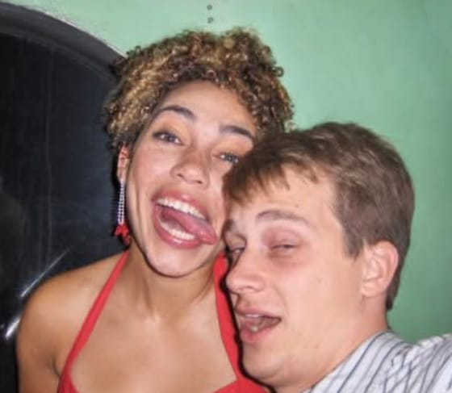

We study how memories affect the way we process multisensory information and build expectations.
"The brain is fundamentally composed of the same components as yogurt.. carbon, phosphorus, oxygen, nitrogen. Yet the brain does something that yogurt does not do. The brain makes memories from experience interacting with the world around it and decides what it will do with its future given the expectations it has about that future."
We have a narrative of our lives. We know who we are or we know that we must experience more and contemplate harder to know who we are. This concept of ourselves makes it possible for us to decide what to do next. Go for a bike ride because the sound of nature feels rejuvenating, take that new job because working with undermining people is exhausting and exciting opportunities await elsewhere, spend some well deserved quality time with good friends.
The goal of research in the Garner lab is to understand how the brain takes what it has already learned to implement expectations that alter our interpretation of what we see and hear. Our work focuses on how memory regulates the way auditory and visual information interact in the brain to create perception.
Multisensory perception and the role of long-range projections in cortex.
How the brain's internal models and stored memories interact with incoming sensory information to create perceptions and predictions.
Neural pathways that allow animals to move in response to sensory stimulation and plasticity for therapeutic applications.
The Garner lab uses mice and makes use of many techniques in chemistry, biology, optics, computer science, behavior, and psychology. We engineer virtual realities for empirical control of animals' worlds and sensory environments and use an array of genetic approaches to tag, monitor, and manipulate neural circuits. We use 2-photon calcium imaging to probe neural dynamics as animals perceive, learn, and move their bodies.
Firstly, we want to thank our mice. Without them, none of our research would be possible, and we love them for all their efforts.
Principal Investigator
Received B.S. in Biochemistry and Psychology from University of Oregon. Ph.D. in Neuroscience from UC San Diego (Mayford lab). Scientist at Allen Institute for Brain Science, postdoc at Friedrich Miescher Institute (Keller lab). Winner of the Max Burger Prize for postdoctoral work.
View Publications →
Visiting Researcher from Meta Reality Labs
Neuroscientist turned ML researcher currently developing consumer brain-computer interfaces at Meta. Ph.D. in Neuroscience with expertise in neural signal processing and machine learning. Collaborating with the Garner Lab on computational approaches to memory-perception interfaces and AI-assisted experimental design. Also investigating whether advanced AI assistants can enhance lab productivity (results pending...).
Lab Manager & Research Assistant
B.S. in Neurobiology and Philosophy from UW-Madison. Previously worked in software design and data analysis at Epic Systems and was a research assistant at the Center for Healthy Minds.
Postdoctoral Fellow
B.S. in Biology from UT San Antonio, Ph.D. in Neuroscience from University of Illinois, Urbana. Expert in multi-unit recordings, auditory cortex, and computational neuroscience.
Research Assistant
B.S. in Neuroscience and Biology from Emmanuel College. Previously studied at University of Leeds and was a research assistant with Dr. Elizabeth Crofton. Musician and composer.
Imaging Data Infrastructure Specialist
B.Tech. in Computer Engineering from K.J. Somaiya College, Mumbai. M.S. candidate at Northeastern University. Experience in data analysis, e-commerce, and machine learning for Alzheimer's detection.
Master's Student
Master's student from University of Vienna, Austria. Previously researched insular cortex in reinforcement learning (Melzer lab) and THC effects on neuroblastoma cells (Moldzio lab).
Master's Student
Master's student from École Polytechnique Fédérale de Lausanne (EPFL), Switzerland. Experience developing flexible microneedle arrays for EMG and working at Medtronic on medical device characterization.
Reading and Writing Memories Specialist
Undergraduate at Northeastern University studying Neuroscience, pursuing cooperative education internship. Previously studied in Dublin, Ireland. Dance, piano, and voice instructor.
Celebrating our accomplishments with an ice cream outing! Our Data Informatics Specialist Anushka won in Pipetting, and Avlinn and Gavin won the PPE Relay!
RecentLea and Gavin imaging neural activity while optically stimulating input from our favorite brain region while mice explore an audio-visual virtual reality world using all the software we designed!
January 2025Recognized for her outstanding postdoctoral work at the Friedrich Miescher Institute for Biomedical Research.
2024Celebrating our first year with a magnificent lab crew dinner and birthday breakfast from one of our favorite restaurants.
March 2023These brilliantly creative folks won the HMS Neurobiology Pumpkin Carving Contest!
Fall 2024Welcome to our spectacular, newly renovated lab. Time to unpack and start the science!
March 2022Memory, Perception, and Predictive Processing
Compensation: HMS compensates postdoctoral fellows using an internal pay scale based on years of experience, starting at $65,000 at Level 0.
Email Dr. Aleena Garner with:
Supporting innovative neuroscience research